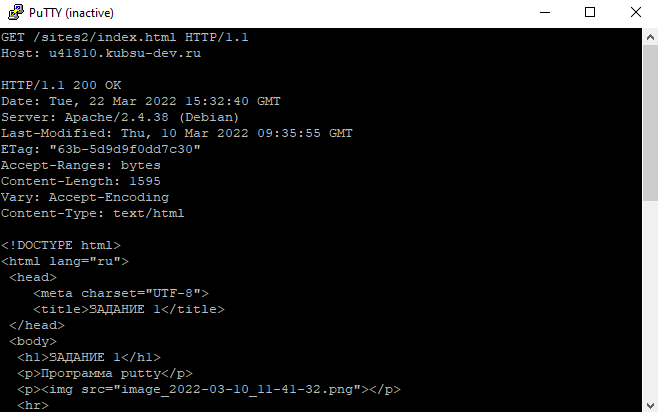
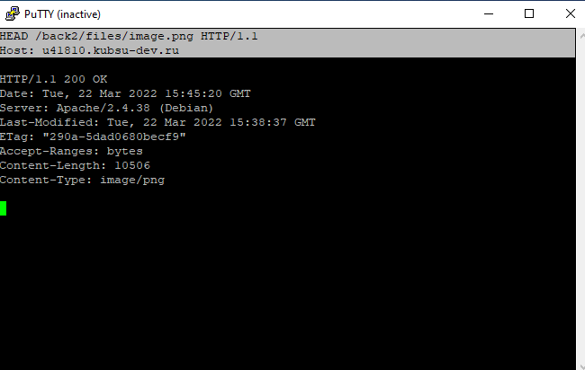
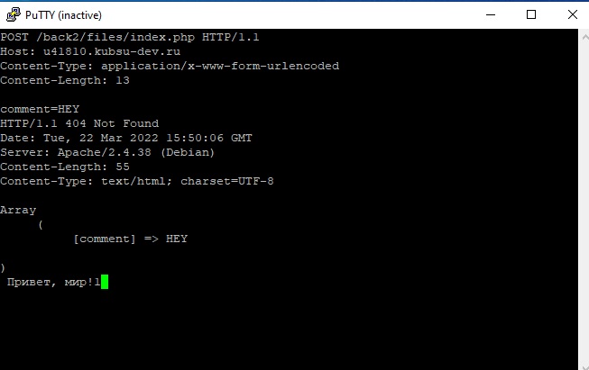
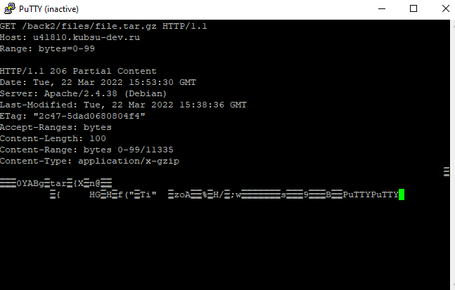
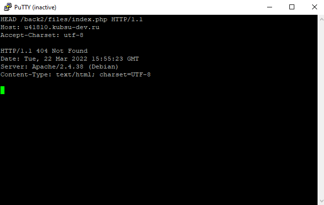

Главная страница методом GET в протоколе HTTP 1.0
GET — метод для чтения данных с сайта.
HTTP/1.1 200 OK -
запрос успешно выполен
Server: Apache/2.4.38 (Debian) - веб-сервер Apache
ETag: "29cd-5662c55968561" -спецификация
Accept-Ranges: bytes - указание, на то, что поддерживается запрос по байтам
Content-Length: 10701 - размер файла в байтах
Vary: Accept-Encoding - кэш должен происходить в Accept-Encoding
Content-Type: text/html - определяет MIME тип ресурса
Внутренняя страница методом GET в протоколе HTTP 1.1
Размер файла file.tar.gz, не скачивая его
HEAD —
метод аналогиченый методу GET, за исключением того, что сервер ничего не посылает в информационной части ответа.
Метод HEAD запрашивает только информацию заголовка о файле или ресурсе.
Этот метод используется, когда клиент хочет найти информацию о документе, не получая его.
Медиатип ресурса image.png
Комментарий на сервер по адресу index.php
POST — метод для отправки данных на сайт.
Первые 100 байт файла file.tar.gz
Кодировка ресурса index.php
